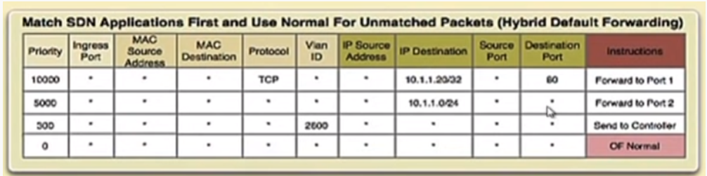

1. In Python socket programming, while defining a socket, SOCK_STREAM refers to a type of:
- a. SocketFamily
- b. SocketType
- c. SocketName
- d. SocketProtocol
Correct Answer: b. SocketType
2. If you want to change the label of the Y-axis while plotting a graph using matplotlib in Python, what among the following functions do you use? Suppose you have imported matplotlib as plt
- a. plt.show()
- b. plt.plot()
- c. plt.ylabel()
- d. plt.yaxis()
Correct Answer: c. plt.ylabel()
3. In Socket programming, the parameter AF_INET stands for ___________.
- a. Unix protocols
- b. Internet Protocol (IP)
- c. File sharing
- d. Time slicing
Correct Answer: b. Internet Protocol (IP)
4. Suppose a Python server is receiving data from a socket as follows:
data, addr = sock.recvfrom(1024)
What kind of socket ‘sock’ is being considered here?
- a. TCP socket
- b. UDP socket
- c. TAP socket
- d. None of the given
Correct Answer: b. UDP socket
5. What is the use of the Mobi-Flow protocol?
- a. Enabling static SDN
- b. Enabling SDN to incorporate mobility
- c. Enabling Odin Master
- d. Enabling traditional BGP
Correct Answer: b. Enabling SDN to incorporate mobility
6. During remote server access using socket programming what is the utility of the <socket_name>.listen() function?
- a. To create a new socket
- b. To bind the socket to connection
- c. To wait for clients to connect
- d. To close the connection
Correct Answer: c. To wait for clients to connect
7. Which among the following is the correct direction for PACKET_OUT type messages in SDN?
- a. From controller to switch
- b. From switch to controller
- c. Between two switches
- d. Between two controllers
Correct Answer: a. From controller to switch
8. Which among the following is a limitation of the traditional non-SDN networks?
- a. Switches do not possess routing table
- b. Switches are unable to forward traffic
- c. Switches do not have a global view of the network.
- d. All of the given
Correct Answer: c. Switches do not have a global view of the network.
9. During remote server access by a Raspberry Pi, where the Raspberry Pi acts as a client, the client needs the following?
- a. Only IP address of server
- b. Only port number
- c. Both server IP address and port number
- d. Client’s IP address
Correct Answer: c. Both server IP address and port number
10. With respect to the concept of soft time-out and hard time-out in SDN switches, which of the following relations hold?
- a. Soft time-out >= hard time-out
- b. Hard time-out >= soft time-out
- c. Soft time-out = hard time-out always
- d. None of the given
Correct Answer: b. Hard time-out >= soft time-out
11. Which of the following is true?
- a. Traditional Network: Routing Table, Software Defined Network: Routing Table
- b. Traditional Network: Flow Table, Software Defined Network: Routing Table
- c. Traditional Network: Routing Table, Software Defined Network: Flow Table
- d. Traditional Network: Flow Table, Software Defined Network: Flow Table
Correct Answer: c. Traditional Network: Routing Table, Software Defined Network: Flow Table
12. Consider the following figure below. To which issue of SDN does this particular figure relate?

- a. Controller placement issue
- b. Flow Rule placement issue
- c. Hardware placement issue
- d. Analysis placement issue
Correct Answer: b. Flow Rule placement issue
13. With respect to the directional APIs in SDN, what is the functionality of East-Westbound APIs?
- a. To communicate between the controller and switches
- b. To communicate among multiple controllers
- c. East-Westbound APIs do not exist
- d. To communicate between switches themselves.
Correct Answer: b. To communicate among multiple controllers
14. Hierarchical SDN architecture is also known as __________ architecture.
- a. Tree
- b. Flat
- c. Mesh
- d. Line
Correct Answer: a. Tree
15. Integrating SDN with IoT is not recommended and is not a suitable approach to follow.
Correct Answer: a. False